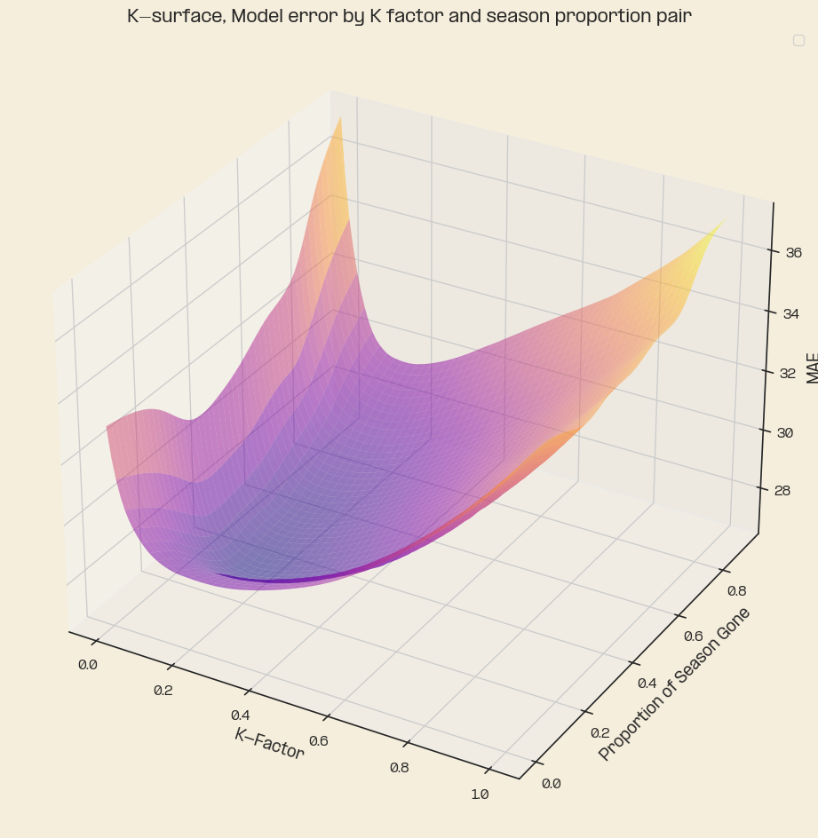
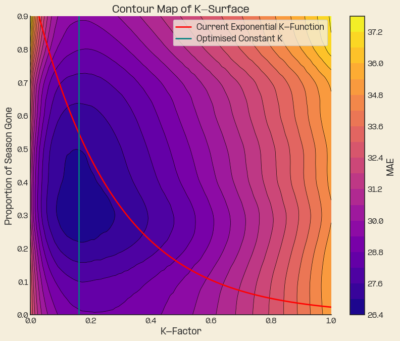
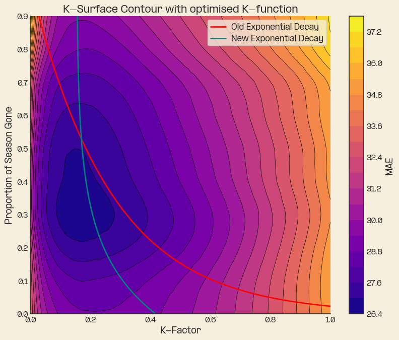
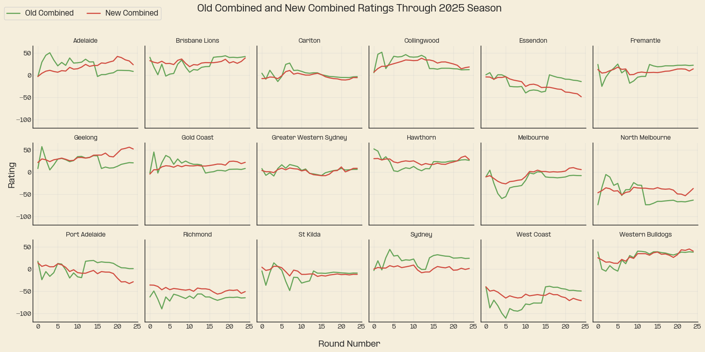
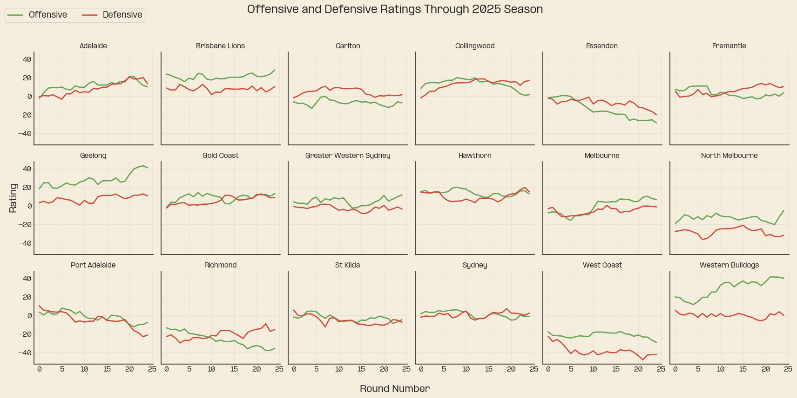

The K-Surface
Footy
ODELO
Model updates
Optimisation
Improving the optimisation of the K-factor
Introduction
After a prolonged break (uni and full time work keeps you quite busy it turns out), I’m back with a post about optimisation and one of many model updates I’ve not had time to write up. In my first post I alluded to K-factor as being the worst optimised parameter in the model despite its importance in an ELO model. In this post I’m going to outline the method I explored to improve on the existing K factor used in the model, which at the moment is an exponentially decaying function depending on the where a game is in the season.
Optimisation Logic
In approaching the problem of K-factor optimisation I set out with some initial assumptions. These assumptions provide some constraints to aid in optimisation as well as fulfilling logical properties we’d expect of the season.1
Assumed properties of the K-function:
K-factor is a function of the proportion of the season gone
The function is smooth2
The function is non-increasing
In simpler terms, the weighting given to a team’s performance should be continuous.
This means if the AFL added a 9 and ¾ round (I wouldn’t put it past them) 3 the function would still be applicable; this wouldn’t be possible if fitting a function too closely to historic proportions of the season since the number of games in a season has fluctuated, limiting the set of values available.
The non-increasing property implies that performances should not be weighted any more than any one game before them. This should reflect the nature of the information we have about teams as the season progresses and accounts for early uncertainty and dampens the effects of dead rubber matches late in the year. Critics might equally say late improvers will be under accounted for, which is a definite possibility and a drawback for the ratings system.
The K-surface
The biggest indicator for me that improvement was needed for the K parameter was that the average error in the front and back halves of the season were fairly far off the actual average, with a slight skew towards the end of the season. To visualise this, I ran a few thousand iterations of the model with pairs of the form (k-factor, season proportion) as variables. After we run the model and calculate the error we interpolate tuples of (k-value, proportion, error) which gives a visually appealing plot of what I’ve nicknamed the K-surface, an error surface in terms of k-value and season proportion.
This comes with an accompanying and more readable contour map. Where plotting the current K functions over the top along with the optimal constant K, its clear that the current function in the model is unsatisfactory.

The Optimisation Problem
With the problem clear, its time to move on to determining a technique for optimisation. The optimisation problem is to determine a function \(k(s)\) where \(s\) is the proportion of the season gone and minimises the interpolated error function \(f(k(s),s)\) which is described by the tuples generated earlier.
\(k(s)\) is an approximation of what I’m calling the ‘minimal’ contour of the k-surface. If you were to think about this in physical terms the k-surface is a bit like mountains and the minimal contour would be where a river would naturally form from rainfall.
To optimise I bucketed proportions of the season into groups of proportions to account for the differing proportions caused by different season lengths to attain a greater sample size and avoid over fit.
After spending quite a bit of time applying various techniques to determine a suitable curve to fit the K-surface, I eventually found myself back at square one. I ended up fitting an exponential decay function again, though this time the K-surface data I had developed was a far better source for optimisation compared to my last set, where I hadn’t parameterised the season as well. For reference, the last time I optimised the function was about 40 minutes before opening round in Sydney.
After optimisation, plotting back over the top of the contour map we can see that this new optimisation is vastly closer to the optimal ‘minimal’ contour of the K-surface.

There are of course other approaches to determining an approximation of the contour.
The goal of an appropriate optimisation in this context is to minimise the error over a local proportion of space and also the total space. This goal is why the flat line K optimisation is ineffective; on average it works well but its accuracy over specific proportions is poor and would lead to bad calibration for game predictions. We really wanted to minimise the distance of the K-function to the average error over lots of small windows of the season in a way which minimises error across the total season. In future, I believe the best way to tackle this would be to implement a similar approach to the above using integrals and a parameterised K-surface.
However, given some analysis I’ve done on the distribution of error, it seems that the new K-optimisation is within the bounds of where an optimal function would lie. Hence, I’m running with this solution for the time being since I expect to get a better return trimming error elsewhere.
Results
In all with a couple of other minor refinements this change was able to bring MAE to 27.9 down from 28.4 which is a satisfying result, though error remains unsatisfactorily high. Having done some hypothesis testing on this value the reduction in error is statistically significant which is not all that surprising.
We can also now compare the results to the original version of the model, below are plots of each team’s combined ratings under each version of the model. It’s obvious that the K-value wasn’t quite right before just by looking at some of the extreme movements in rating.

Finally, the ratings plots for 2025. Which shows us visually some of the stories from the year, Collingwood’s peak and decline into the end of the year, The bulldogs very mediocre defence, the fusion of Hawthorn’s back 6, Geelong’s offensive improvement into the end of the season. And also… Brisbane was pretty good.
